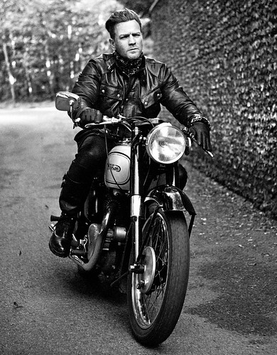

Embracing the community
Ask anyone who knows us: State Bicycle is passionate about gear cycling and its emerging culture. We host weekly bick rides across the country, organize alleycat bike races, sponsor talented riders around the world, and partner with cycling advocacy groups. Our commitment to supporting both the local rider and greater riding community is the reason why we're in this business. Even if you never own a State Bicycle, there is plenty of reason to connect with the community we have been cultivating since the beginning.